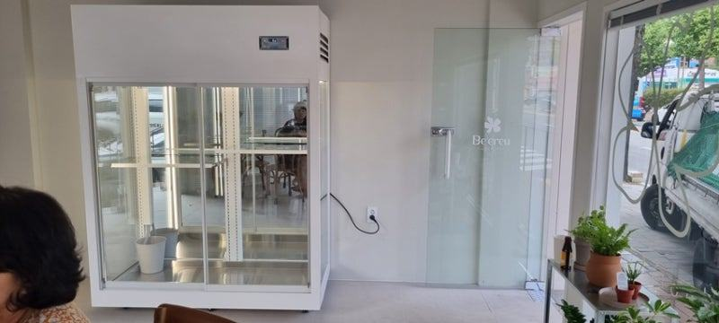
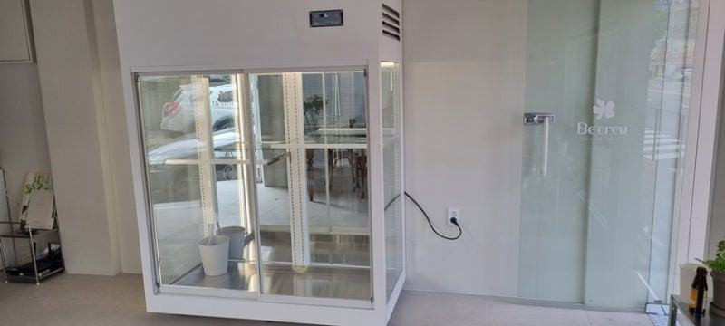

한성제품
냉장쇼케이스 간냉식 직냉식, 고른 뒤 달라지는 관리법

직냉식은 벽면의 냉각 파이프로 직접 식혀 수분 유지와 전기 소모 면에서 유리하지만 성에를 주기적으로 관리해야 하고, 간냉식은 팬으로 냉기를 돌려 성에가 적고 온도 회복이 빠르지만 상품이 마르지 않게 신경 써야 합니다. 진열 상품이 포장돼 있는지, 문을 얼마나 자주 여는지를 기준으로 고르시면 됩니다.
안녕하세요. 업소용 냉장쇼케이스를 매장 맞춤으로 제작하는 한성쇼케이스입니다.
냉장쇼케이스를 알아보시면 꼭 마주치는 단어가 간냉식과 직냉식입니다. 설명을 몇 번 읽어도 "그래서 우리 매장은 뭘 써야 하지?" 하는 질문이 남는다는 말씀을 많이 하십니다.
두 방식은 어느 한쪽이 늘 낫다기보다 성격이 다릅니다. 그리고 고른 뒤에 매일 해야 하는 관리도 달라집니다.
이 부분을 미리 알고 고르시면 설치 후에 당황할 일이 줄어듭니다.
오늘은 두 방식의 원리와 장단점을 짚고, 각각을 골랐을 때 사장님이 챙기셔야 할 관리법까지 정리해 보겠습니다.
1. 직냉식, 벽면이 직접 차가워지는 방식
직냉식은 쇼케이스 벽면에 냉각 파이프를 붙여 벽 자체를 차갑게 만들고, 그 냉기로 내부 온도를 낮춥니다.
바람을 세게 돌리지 않아 소음이 적고, 벽면 전체가 차가워 냉기가 비교적 고르게 전해집니다. 전기 소모가 적은 것도 장점입니다.
공기 순환이 적어 문을 열었을 때 간냉식보다 덜 시원하게 느껴질 수 있지만, 그만큼 상품의 수분을 덜 빼앗습니다.
김치냉장고에 직냉식이 많이 쓰이는 것도 이 때문입니다. 신선도와 촉촉함이 중요한 식재료에 유리합니다.
- 소음과 전기 소모가 적은 편
- 수분 유지에 유리
- 성에가 끼기 쉬움
2. 간냉식, 팬이 냉기를 돌리는 방식
간냉식은 별도의 냉각기에서 만든 찬 공기를 팬으로 내부에 순환시킵니다. 냉각 속도가 빠르고 문을 연 뒤 온도 회복도 빠르며, 성에가 거의 생기지 않아 유리가 맑게 유지됩니다.
대신 바람이 계속 돌기 때문에 포장하지 않은 상품은 표면이 마르기 쉽고, 구조가 복잡해 가격대가 높은 편입니다.
포장된 음료나 디저트, 완제품을 진열하고 손님이 문을 자주 여는 매장에 잘 맞습니다.
문을 하루에 수없이 여는 편의점형 매장이나 음료 진열장에서 간냉식이 많이 쓰이는 이유가 여기 있습니다.
문을 닫자마자 다시 차가운 공기가 채워져 앞줄 상품까지 온도가 빨리 돌아옵니다.


3. 직냉식을 골랐다면: 성에 관리
직냉식은 성에 관리가 핵심입니다. 성에를 방치하면 냉각 성능이 떨어지니 쌓이기 시작할 때 바로 제거해 주세요.
상품을 빼고 전원을 끈 뒤 자연스럽게 녹이고, 녹은 물이 내부 드레인 홀로 잘 빠지는지 확인하시면 됩니다.
빨리 녹이려고 드라이기나 뜨거운 물을 쓰는 것은 고장의 원인이 될 수 있어 피하셔야 합니다. 성에를 완전히 막을 수는 없지만, 문을 여닫는 횟수를 줄이면 온도 편차가 줄어 생기는 빈도를 낮출 수 있습니다.
- 드라이기·뜨거운 물로 녹이지 마세요.
- 드레인 홀이 막히지 않았는지 보세요.
- 문 여닫는 횟수를 줄이세요.
4. 간냉식을 골랐다면: 건조와 팬 관리
간냉식은 성에 걱정이 적은 대신 상품 건조를 신경 써야 합니다. 케이크 단면이나 손질한 재료처럼 노출된 상품은 덮개나 포장을 활용하고, 송풍구 바로 앞에는 마르기 쉬운 상품을 두지 마세요.
팬이 냉기를 돌리는 구조라 송풍구와 흡입구가 상품에 막히면 칸마다 온도 차가 생깁니다. 진열할 때 바람길을 남기고, 평소와 다른 팬 소리가 나면 점검을 받아 보시는 것이 좋습니다.
체크리스트
- 진열 상품의 포장 여부
- 문을 여는 빈도
- 수분 유지가 중요한 상품인지
- 직냉식: 성에 제거와 드레인 홀
- 간냉식: 송풍구 앞 진열과 건조
- 평소와 다른 소음 여부
현장에서 자주 보는 경우: 직냉식 성에를 급하게 녹이다 생기는 문제
업소용 냉장고를 들이며 직냉식과 간냉식 사이에서 고민하시는 분들께 직냉식의 장단점을 설명드리면, 소음과 전기 소모가 적고 수분 유지가 유리하다는 점에 많이 공감하십니다.
다만 공기 순환이 적어 성에가 끼기 쉽고 내부 드레인 홀로 물을 빼야 한다는 점은 미리 알고 계셔야 합니다.
현장에서 자주 보는 실수는 성에를 빨리 없애려고 드라이기나 뜨거운 물을 쓰는 경우입니다. 이는 고장으로 이어질 수 있어 자연스럽게 녹이도록 안내드리고, 문을 여닫는 횟수를 줄여 성에 발생 자체를 줄이는 습관을 권해 드립니다.





자주 묻는 질문
카페 디저트 쇼케이스는 어느 방식이 맞나요?
손님이 자주 보고 유리가 맑아야 하는 디저트 쇼케이스는 간냉식을 많이 선택하십니다. 다만 노출된 케이크는 마르지 않도록 진열 위치와 덮개를 함께 신경 써 주세요.
직냉식 성에는 얼마나 자주 제거해야 하나요?
매장 습도와 문 여는 횟수에 따라 다릅니다. 성에가 눈에 띄게 쌓이기 시작하면 바로 제거하는 것을 기준으로 삼아 보세요.
한 매장에서 두 방식을 섞어 써도 되나요?
됩니다. 포장된 음료는 간냉식, 수분이 중요한 식재료는 직냉식처럼 상품별로 나눠 쓰는 매장도 많습니다.
매장 조건에 맞춰 만드는 한성쇼케이스
원하시는 제품 사진과 설치할 공간 사진만 보내 주셔도 매장에 맞는 구성을 추천해 드립니다.
- 전국 240여 개 A/S 전담 센터 운영
- 본사 대량 자재 매입으로 품질 대비 합리적인 가격
- 유럽제·삼성 냉각 콤프레셔 적용
- 국내 최초 쇼케이스 전문 디자이너 상주
매장 폭과 원하는 진열 구성을 알려 주세요. 실측과 견적을 안내해 드립니다.
031-986-2458